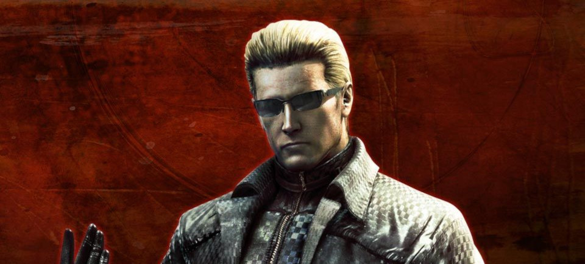

Albert Wesker
Dr. Albert Wesker (c.1960-2009) was an accomplished virologist notorious for his work with groups affiliated with the bio-weapons black market. Originally one of the test subjects in Project W who specialised in biotechnology and bioengineering, he was an elite perfectionist individual of absolute coldness, always wearing deep-black sunglasses that gave him an even more unapproachable air.
As a senior researcher linked to the t-Virus Project as early as 1978, Wesker bore witness to and at times shaped Umbrella's B.O.W. research. He officially left the company soon after a stall in the Tyrant Project and began work as a spy, leading to a career in the United States Army and eventually with S.T.A.R.S. as its Captain.
Wesker ultimately chose to betray Umbrella and work with other groups to steal its research data, benefiting from a mutation brought on by a prototype virus that gave him superhuman powers. This made him, in his self-assertion, believe that he was chosen to achieve the ultimate goal of causing the mass extinction of humanity in favor of evolution. Ultimately, Wesker was killed in March 2009 during a BSAA operation which uncovered his role in a doomsday project dubbed Uroboros.